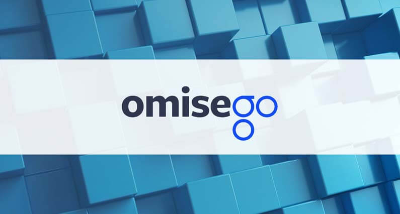

Mi az az OmiseGO? Útmutató kezdőknek
Az OmiseGO projekt meglehetősen érdekesen van felépítve. OmiseGO technológiája Ethereum-ra épül. A csapat célja, hogy valós idejű peer to peer érték váltóként és fizetési szolgáltatásként működjön, mindezt globálisan szinten szeretnék megvalósítani. Továbbá a projekt nemcsak hagyományos valutákkal, de kriptovalutákkal is foglalkozik.
Omise egy valós cég amely 2013 óta létezik thaiföldi székhellyel, ezáltal elsődleges fókuszpontjuk Ázsia. Online fizetési lehetőségeket kínál, és több ezer vásárlóval rendelkeznek.
OmiseGO egy kiterjesztése Omise-nek, amely 2017-ben jött létre, hogy kihasználja a blokklánc technológiában rejlő lehetőségeket. Arra törekszik, hogy forradalmasítsa az emberek pénzügyi és érték eszközeinek irányítását és egymás közötti cseréjét, azáltal, hogy biztonságos és teljesen nyílt módot biztosít erre egy harmadik fél bevonása nélkül.
Milyen valós problémákat próbál OmiseGO megoldani?
Az első probléma, hogy több száz millió embernek Ázsiában és két milliárd embernek a világon nincs hozzáférése bankhoz. Nincs lehetőségük bankszámlát nyitni, ezáltal nem tudják használni a mindennapi életben, vagy könnyen pénzt küldeni és fogadni. Csak költséges megoldásokat használva tudnak pénzt küldeni. Másrészről, különösen Ázsiában sokkal több embernek van internet hozzáférése, mint hozzáférése bankhoz.
OmiseGO szeretne ezeknek a bankkal nem rendelkező embereknek egy olyan nyílt, decentralizált megoldást kínálni amellyel birtokolhatnak, küldhetnek és fogadhatnak bármiféle valutát minimális költségek mellett.
Második probléma egy alapvető koordinációs probléma fizetési szolgáltatók között. Ez azt jelenti, hogy a gazdasági és pénzügyi világ tele van zárt hálózatokkal ahol lehetséges a pénzküldés egy hálózaton belül, de egy másik hálózatba való utalás sokkal nehezebb és költségesebb.
OmiseGO szeretné biztosítani a felhasználóknak és kereskedőknek egy univerzális, decentralizált megoldást, amely könnyűvé és költség hatékonnyá teszi a pénzküldést bármely hálózatból bármely hálózatba, valamint az országok és joghatóságok között.
Mellékhatásként egy olyan hálózat amely ugyanúgy megengedi a hagyományos valuta váltását mint a kriptovalutáét, a blokklánc biztonságos rendszerén, könnyű használhatósággal és alacsony költségeivel nagy valószínűséggel növeli a kriptopénzek használatát a mindennapi életben.
Miben különbözik OmiseGO más váltóktól?
OmiseGO célja, hogy megváltoztassa a jelenlegi kriptovaluta vétel és eladási módszereket a kriptovaluta váltókon keresztül. Ezt azáltal kívánja elérni, hogy hozzákapcsolja a meglévő kriptovaluta tárcákat a központi OmiseGO blokklánchoz, amin a felhasználók könnyen és gyorsan válthatnak kriptopénzeket.
Kriptovaluta váltók manapság centralizált módon működnek. Ez azt jelenti, hogy az adatbázisok amelyek minden tranzakció adatot tartalmaznak egy központi szerveren vagy szervereken vannak tárolva amelyek a váltó birtokában vannak. Ezek mellett a felhasználó minden adatát is itt tartják, gyakran személyi azonosságot igazoló adatokat mint útlevél vagy jogosítvány.
OmiseGO ugyanazokat a váltó funkciókat kínálja, de viszont az összes tranzakció decentralizált és a blokkláncon van tárolva.
Ez biztonságban tartja az adatokat, mert egy hacker nem tud hozzáférni egy szerverhez. Egy hackernek minden felhasználót meg kellene támadnia, hogy megváltoztassa a blokklánc állapotát ami majdnem lehetetlen feladat.
Mi az az OMG?
OMG, OmiseGO érték tokenje. OmiseGO mint platform nem akar kriptovalutává válni, az OMG tokenekre két ok miatt van szükség:
Befektetési token. Egy vállalatba való befektetéshez a vállalatnak nyilvánosnak kell lennie, és sokszor bonyolult szabályozásoknak kell megfelelni. OMG token vásárlása megengedi, hogy a felhasználók befektessenek a vállalatba és a platform fejlesztésébe.
Másik ok a tranzakciós díjak fizetése. Kriptovaluták váltása díjakkal jár (habár jelentősen olcsóbb, mint egy hagyományos váltón) és OmiseGO nem tudja garantálni, hogy a felhasználónak megfelelő egyenleg áll rendelkezésre a tranzakciós díj kifizetéséhez az adott kriptopénzben (mondjuk BTC), ezért a tranzakciós díjak fizetése OMG-ben kerül sor. A platform használatához, szükség lesz némi OMG-re a tárcádban, amelyből a tranzakciós díj fedezve lesz.
OMG vásárlás és tárolás
Legegyszerűbb módja ha először Bitcoin-t vagy Ethereum-ot vásárolsz Coinbase vagy BitPanda-án. Ezután többek között Binance vagy Bitfinex segítségével cserélheted Bitcoin-t OmiseGO-ra. Bitcoin vagy Ethereum beszerzése után Binance és Bitfinex oldalon részletes útmutatót találsz kriptopénz vásárlással kapcsolatban.
OMG egy ERC20 Ethereum alapú token ennek megfelelően Ethereum tárcákon lehet tárolni mint MyEtherWallet és Mist
Záró gondolatok
OmiseGO egy forradalmian új platform fizetési és váltási ügyletek lebonyolítására. A platform célja, hogy támogassa a nagy mennyiségű váltásokat jelentősen csökkentett költségek mellett, azonnali kifizetésekkel és váltásokkal ezáltal bolygatva fel a jelenlegi fizetési vállalatok állóvizét.


2018. Február 23.